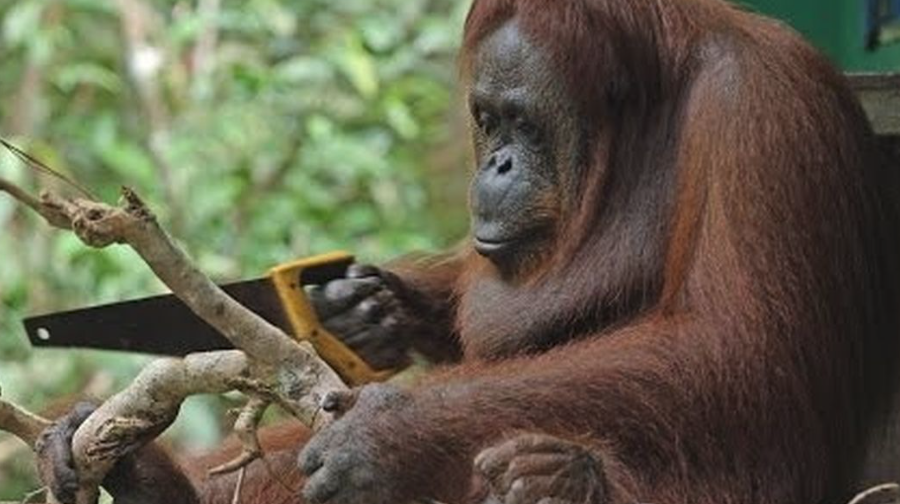

Hitchhiker’s guide to building and querying statistical models
context option 1: - yield ~ tomatoes greenhouse v inside - conf = planted nice ones in greenhouse - med = i water greenhouse more regularly option 2: - aggression ~ chimps in large v small enclosures - conf = zookeeper put older chimps in small enclosures - med = zookeeper spends more time with each chimp in small enclosures
tools vs design
Over the past 10 weeks, we have done a lot of work learning about the machinery of statistical models. But learning how different tools work is not the same as learning how to use them to build something.

One of the biggest challenges in doing scientific research is to thinking very carefully, deliberately, and clearly about all parts of the process. It is all too easy to go through the motions and do what looks like science, but with only ever having a research question that is ill-defined and ambiguous. No amount of fancy statistics can provide a clear answer to an under-specified question.
The first principle is that you must not fool yourself and you are the easiest person to fool
[Richard Feynmann]
specifying clear research questions
At a big picture level, research goals typically fall into one of three categories:
- descriptive - summarise characteristics
- predictive - forecast the future for use in screening/selection/monitoring
- explanatory - identify if one thing causes another or understand the mechanism by which it happens
The majority of psychological research tends to fall into the “explanatory” category. Often, after taking an introductory statistics class, we have had the phrase “correlation does not imply causation” endlessly hammered into us. It’s a valid statement, but it’s not very useful — if our aim is to understand the world and how it works, we cannot shy away from thinking about causality when defining our research questions.
Research questions in the social sciences will very often use language that is implicitly causal, but then fail to engage with the assumptions that underpin whether their analysis is actually able to address that question. Words such as “effect”, “influence”, “explain”, “prevent”, “improve”, “protect” etc., are all terms that imply causation, asking a question about what would happen to a variable \(Y\) in the event that variable \(X\) changed. Without careful thought (about both design and analysis) a correlation tells us nothing about the questions we are actually interested in.
Note, we’re not going to learn anything in this reading that magically allows us to interpret our estimates as ‘causal’. No such thing exists.
Consider this reading more as a gentle encouragement to think more carefully about which association it is that you actually want to report.
“causality is not extra‐statistical but instead is a logical antecedent of real‐world inferences” (Greenland, 2022, p. 3).
To build the intuition of how we can improve our research questions, let’s move to an example:
Research Question: Are chimpanzees more aggressive in large groups (enclosures with >10 chimps) compared to small groups (enclosures with <10 chimps)?
Take a few minutes to reflect on whether the above research question is clear and specific. What exactly is it asking? Is it descriptive? predictive? explanatory?
As it currently reads, this may feel like it is fairly clear, but it is actually underspecified. As well as not being clear about whether our question is about all chimpanzees, just adults, or just those in zoos, the question does not explicitly differentiate between whether we are interested in:
- a descriptive question: “what is the difference in aggression between chimpanzees currently living in large-group enclosures and those in small-group enclosures?”
- an explanatory question: “what is the difference in aggression for a given chimpanzee in a large-group enclosure compared to how aggressive that same chimpanzee would be if placed in a small-group enclosure?”
A clearly defined research question should have two things:
- a unit-specific quantity
- this is the specific thing we want to know about, defined at the level of the unit of interest. It could be a single value \(Y_i\) for a given unit \(i\), or a counterfactual comparison of \(Y_i\) under different levels of another variable \(X\), which we can write as \(Y_i(X_i=1) - Y_i(X_i=0)\)
- a target population
- this is the set of units over which we are aggregating our quantity.
In our example, we can move to a somewhat more clearly stated question:
Research Question: For adult chimpanzees housed in UK zoos, what is the average effect on individual daily aggression of a chimpanzee being placed in a large group (>10 chimp enclosures) compared to being placed in a small group (<10 chimp enclosures)?
Note that the word “effect” here is stating that we want to know how much of chimpanzee \(i\)’s aggressive behaviour is because they are in a large group. We are asking a question that concerns what we would expect chimp \(i\)’s aggression levels to be like in the counterfactual world where we observed them in the other size of enclosure. The unit-specific quantity that we are interested in here are the values that are in the diff column in Table 1.
| chimp | aggr_small | aggr_large | diff |
|---|---|---|---|
| chimp-a | 8 | 10 | 2 |
| chimp-b | 10 | 12 | 2 |
| chimp-c | 22 | 22 | 0 |
| chimp-d | 18 | 21 | 3 |
| ... | ... | ... | ... |
| ... | ... | ... | ... |
| chimp-x | 5 | 8 | 3 |
| chimp-y | 9 | 10 | 1 |
| chimp-z | 8 | 11 | 3 |
Lundberg et al
the study design
Now that we have a well defined research question, there are lots of ways we might design a study to address it.
- observe the aggression levels of chimpanzees in both types of enclosure, along with other variables required to identify the quantity of interest.
- randomly allocate half the chimpanzees into a large-group enclosure, and half into a small-group enclosure, and measure their aggression.
- measure each chimpanzee’s aggression in both types of enclosure (counterbalancing the order in which these occur for each chimp)
We will not cover 3 right now - this design involves multiple measurements per chimpanzee, and we will cover statistical models for such designs in MSMR. Here, we would like to contrast options 1 and 2, and how our understanding of the ‘data generating process’ informs the statistics we will use to address our research question. In both scenarios, we only ever observe a given chimpanzee in one type of enclosure. This means that we can never observe the values in both of the aggr_small and aggr_large columns for the same chimp - we can never directly observe the effect of enclosure size on aggression for any given chimpanzee:
| chimp | aggr_small | aggr_large | diff |
Observed
|
|
|---|---|---|---|---|---|
| enclosure | AGGR | ||||
| chimp-a | 8 | 10 | 2 | S | 8 |
| chimp-b | 10 | 12 | 2 | S | 10 |
| chimp-c | 22 | 22 | 0 | S | 22 |
| chimp-d | 18 | 21 | 3 | S | 18 |
| ... | ... | ... | ... | ... | ... |
| ... | ... | ... | ... | ... | ... |
| chimp-x | 5 | 8 | 3 | L | 8 |
| chimp-y | 9 | 10 | 1 | L | 10 |
| chimp-z | 8 | 11 | 3 | L | 11 |
Our understanding of the study design is key in informing how we use our observed data to assess the research question appropriately. Reasoning about how chimps were allocated to the different enclosures will be necessary to determine what to put in our model.
To build the intuition, we are going to look at some diagrams. These diagrams represent our understanding of how the various attributes influence one another in the real world to generate the data that we have. The arrows represent how one variable influences another. So if we think about out research question in isolation, we can draw it as an arrow going from Enclosure to Aggression.
TODO PIC simple x > y
In the real world, however, there are lots of other things that influence why a chimpanzee behaves aggressively: its age, sex, genetics, hunger, social status, rearing history, hormones etc., etc. To simplify our explanations, let’s just pretend there’s only one main thing that influences aggression levels, and that’s a chimpanzee’s age, with older chimpanzees being less aggressive than younger ones.
1. an observational study
If our study was simply observing chimpanzees in whatever enclosure we find them in, then we need to understand how that allocation happened. If zoos tend to place younger chimpanzees in smaller enclosures, then when we observe a small enclosure we might see a higher level of aggression because it contains younger adults. If we fail to take into account the age differences between large and small enclosures, it is impossible to isolate the effect of group size on aggression - it would be ‘confounded’ by age.
TODO PIC conf
2. a randomised experiment
If our study is instead a randomised experiment, then we know that our the small and large enclosures shouldn’t have vastly different distributions of ages in them. In our diagram, we know that there is no arrow going from Age to Enclosure. In fact, we know that there are no arrows going into Enclosure, because it’s just been randomly allocated.
TODO pic rct
Below, you can play with some data from these two scenarios. In both cases, we have simulated it so that being in a large-group enclosure increases each chimpanzee’s aggression score by 3 compared to when it is in a small-group enclosure.
- In
chimp_obs, we have a study where the allocation of chimps into small-group/large-group enclosures was not random: zookeepers tended to put younger chimpanzees in smaller enclosures.
- In
chimp_rct, we have a experiment in which chimpanzees are randomly allocated into either large-group or small-group enclosures. It wouldn’t happen this perfectly in real randomisation, but we have ended up with exactly the same ages of chimps in both types of enclosure.
Compare the models in the two different scenarios. We are interested, remember, in “the effect of enclosure on aggression”, which corresponds to our enclosureS coefficient (the difference in aggression levels in Small vs Large group enclosures). Remember that in both cases, we have made it so that this difference is 3 (Large v Small) for every chimp.
::: ::::
Note that in the randomised experiment, age is a significant predictor, but including/excluding it does not change the enclosure coefficient. Including it will increase our precision of the estimate, because we are explaining more variance in our outcome variable, but it does not bias the estimate.
In contrast, for the observational study, it is necessary to adjust for age somehow to ‘de-confound’ the effect of enclosure on aggression. If we fail to include age in our model then we might erroneously conclude that smaller enclosures lead to more aggression, rather than less!
Tiprabbit hole: exchangeability of potential outcomes
- rabbit hole: another way to think of this.
- what we want is “exchangeability” wrt to the Y that the groups would have had if they had been in the other group.
- tables of potential outcomes, with delta_i
- compare tables in A and B.
- randomisation into X achieves this
- what we want is “exchangeability” wrt to the Y that the groups would have had if they had been in the other group.
it’s not that we need age to be balanced across groups we need the potential outcomes of aggr_small, aggr_large to be comparable between our groups in the observational study, they aren’t..
#set.seed(1220275)
set.seed(1220275)
cc <- tibble(
age = round(runif(26,13,29)),
#delta = round(rnorm(26,3,1)),
delta = 3,
Y0 = pmax(0,round(rnorm(26,12+-3*scale(age),1))),
Y1 = Y0 + delta,
enclosure = rbinom(26,1,plogis(5*scale(age))),
aggression = ifelse(enclosure==1,Y1,Y0)
) |> arrange(enclosure) |>
mutate(chimp = paste0("chimp-",letters), .before=age)
bind_rows(
cc[1:4,],
data.frame(chimp=c(NA,NA)),
cc[23:26,]
)# A tibble: 10 × 7
chimp age delta Y0 Y1 enclosure aggression
<chr> <dbl> <dbl> <dbl> <dbl> <int> <dbl>
1 chimp-a 16 3 17 20 0 17
2 chimp-b 16 3 15 18 0 15
3 chimp-c 22 3 11 14 0 11
4 chimp-d 23 3 10 13 0 10
5 <NA> NA NA NA NA NA NA
6 <NA> NA NA NA NA NA NA
7 chimp-w 26 3 8 11 1 11
8 chimp-x 25 3 11 14 1 14
9 chimp-y 27 3 10 13 1 13
10 chimp-z 28 3 9 12 1 12senn it’s about randomisation not balanced dahly
Our takeaway might be that we should always conduct experiments, and this is a reasonable first thought — if we have randomly allocated our observations to values of our explanatory variable \(X\), we don’t have to worry about measuring all the possible confounding variables, because it is only randomness that influences what value of \(X\) an observation takes. Indeed, “randomised controlled trials” are generally considered the gold standard. Remember however, that it may often be unethical or impossible to intervene and force people into a certain condition, and in situations where we can conduct experiments we often have to sacrifice ecological validity.
More importantly, while randomisation may assist with confounding variables prior to allocation, experiments do not magically allow us to make causal claims, nor do they absolve us from thinking about the data generating process in our analytical decisions.
Consider, for example, that in our two studies of chimpanzees, we also recorded the amount of time the zookeeper spends with each chimpanzee. Should we include this variable in our analysis in the observational study? What about in the experimental study? Will it matter?
To answer, this, we need a theory about how the variable fits in to the data generating process. Let’s suppose that it sits somewhere along path between Enclosure and Aggression. If the zookeeper spends ~2 hours in each enclosure, then they spend more time-per-chimp for small-group enclosures than they do for large-group ones. It may also be that part (or all) of the effect of enclosure type on chimps’ aggression is that they get less attention from the zookeeper.
In this case, the ‘time with zookeeper’ variable fits in our data generating process as so:
pic obs ZK
pic RCT ZK
If we are right with our view of the data generating process, which model should we use in order to address our research question?